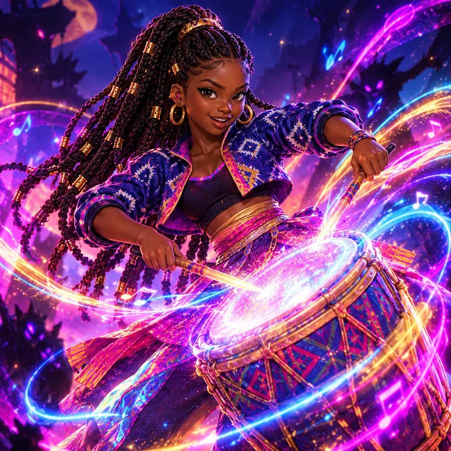

Histórias, tambor, música e viagens, contados por Ìfẹ́dayọ̀, a guardiã do tambor
De Caio Bonamigo Dorigon. Esta história foi escrita para uma menina muito especial, Catarina Odara, e agora outras crianças também podem aproveitar.
A música de fundo das narrações é Orí, de Oridipe, que também criou Orí: Holder of the Heads, uma linda história em quadrinhos afrofantástica iorubá. Obrigada por esse trabalho maravilhoso! Conheça em oridipe.com.
Este livro é gratuito. Se quiser apoiar: 💛 doe pelo PayPal (paypal.me/cdorigon)
Lê-se i-fé-da-ió. O nome vem do iorubá, uma língua da África Ocidental que no Brasil também se chama nagô. Os antepassados dela vieram da África para o Brasil, do outro lado do mar.
Nasceu em Minas Gerais e tem nome iorubá. De dia, canta e dança num grupo de K-pop com afrobeat, o ritmo que nasceu na Nigéria. De noite, em segredo, protege as crianças dos monstros de sombra feitos de pesadelo. A arma dela é um tambor: cada batida espanta uma sombra. Tem língua presa e canta assim mesmo. Em cada viagem, ela vai junto com você.
Este livro tem duas versões
Por onde a gente começa?
Capítulo 1
Uma viagem pelo Portugal medieval
Sintra, Óbidos, Nazaré, Barcelos e Lisboa: castelos, lendas e o mar
O mapa da jornada
Toque num selo e a Ìfẹ́dayọ̀ conta o que tem em cada parada. Os círculos com ? escondem curiosidades sobre Portugal. Use os botões + e −, ou dois dedos, para dar zoom. E o mapa também é seu: aperta 📍 e marca os lugares que você descobrir.Toque num selo para ler o contexto de cada lugar e abrir no Google Maps. O quadro no mar mostra a Serra de Sintra de perto.
Agora toca no mapa, no lugar que você quer marcar.
Histórias do caminho
A Ìfẹ́dayọ̀ conta cada história. Toque em ▶ para ouvir.O contexto histórico de cada lenda, com as fontes. A versão contada pela Ìfẹ́dayọ̀ está no modo Para as crianças.
O que é, o que é?
As charadas da Ìfẹ́dayọ̀ para a estrada. Algumas são dos lugares da viagem; outras são clássicas.
O que é, o que é?
A grande missão
Missões para fazer em casa, antes ou depois de uma viagem, quando você quiser. Cada desafio cumprido ganha um selo de cera.
Vinte e dois selos! Escolhe uma missão quando quiser: ouvir uma história de novo, desenhar, cantar ou contar para alguém. Toca no desafio quando conseguir, que eu carimbo o selo de cera. Não precisa ser na ordem nem tudo no mesmo dia. Se completar tudo, você ganha a medalha do tambor e protege as histórias comigo.
Os selos ficam guardados neste aparelho.
Medalha dourada do tambor
Por ordem deste livro de viagem
Guarda do Tambor das Histórias
Ouviu as histórias do poço em caracol, do sol que mergulha no mar e das muralhas das rainhas.
Assinado: Ìfẹ́dayọ̀, guardiã do tambor
Para qualquer dia
Sempre com você
Quem você é, de onde vem a sua família, o tambor, as músicas, as princesas do mundo e a fotografia. Isso vale para esta viagem e para todas as outras.
O seu brasão
Quem luta contra as sombras tem um brasão! Escolhe o formato, o tecido, a cor e o bicho que vai te proteger. No palco e na luta contra as sombras, ele brilha junto com você. O meu tem um tambor, claro. E o seu?
Um brasão de muitas culturas
A Ìfẹ́dayọ̀ conta para que serve um brasão, e por que ninguém cabe num desenho só.
Ler a história
Sabe por que toda guardiã tem um brasão? Nas caçadoras do K-pop, cada uma tem a sua cor e o seu símbolo, e é assim que a gente reconhece cada uma. Quem inventou os brasões foram os cavaleiros de antigamente. Com capacete, ninguém via o rosto de ninguém, então cada um pintava um desenho no escudo.
Só que uma pessoa não cabe num desenho só. Olha eu. Nasci em Minas Gerais, no Brasil, e o meu nome vem do iorubá, a língua dos meus antepassados, lá da África. Eu canto K-pop, que veio da Coreia, com afrobeat, que nasceu na Nigéria. Luto capoeira, que o povo negro criou no Brasil, e danço balé, que veio da Europa. E tudo isso sou eu, inteirinha.
O Brasil também é uma mistura. Os povos indígenas já moravam lá antes de todo mundo, e deles a gente ganhou palavras como pipoca e capivara. Da África vieram o tambor, o samba e a palavra cafuné, o carinho no cabelo. Dos portugueses veio a língua que se fala no Brasil.
Depois chegou gente de muitos lugares. Da Itália vieram famílias para plantar uva, principalmente no Sul. Do Japão vieram famílias para plantar café. E da Síria e do Líbano veio a esfiha, que hoje tem em toda padaria.
Mas essa história nem sempre foi justa. Muitas pessoas africanas foram trazidas à força, e os povos indígenas perderam muitas das suas terras. Eles não puderam escolher. Por isso a gente lembra dessa história com respeito, e por isso nenhuma cultura vale mais que a outra.
E o pão de queijo de Minas? A mandioca vem dos indígenas, o queijo veio com os portugueses, e foram as cozinheiras de Minas, muitas delas mulheres negras, que juntaram tudo. Três culturas numa bolinha só!
Então, no seu brasão, pode misturar à vontade: escudo iorubá, tecido adire, cor de rainha, brilho de K-pop e um bicho do Brasil, como a capivara. Agora me conta: quais culturas moram dentro de você? E de onde vem a sua família?
Quando alguém olha torto
Uma conversa da Ìfẹ́dayọ̀ sobre o que sentir, o que fazer e quem está do seu lado.
Ler a conversa
Vou te contar uma coisa que aconteceu comigo. Um dia eu estava numa loja com a minha mãe, e o moço da loja começou a seguir a gente de um lado para o outro, olhando torto, como se a gente fosse fazer alguma coisa errada. Com as outras pessoas ele não fazia isso. Foi por causa da cor da nossa pele. Isso tem nome: racismo.
Eu senti um monte de coisa junta: tristeza, raiva, vergonha, um nó na garganta. Tudo bem sentir isso. E eu aprendi uma coisa importante: a culpa nunca é de quem foi tratado mal. O problema está no preconceito de quem olhou torto.
Às vezes a gente vê alguém que a gente ama ser tratado de um jeito que a gente não é. Dá um embrulho no peito, e às vezes até uma culpa esquisita. Essa culpa não é sua. Se ela aparecer, conta para um adulto em quem você confia.
Sabe o que eu fiz? Fiquei pertinho da minha mãe, segurei a mão dela, e depois a gente conversou sobre tudo. Se um dia você vir alguém tratando mal você, alguém da sua família ou qualquer pessoa, você não precisa resolver tudo de uma vez. Chega perto de um adulto em quem você confia e conta o que viu e o que sentiu. Contar é coragem.
Na mesma família tem gente de pele mais escura e de pele mais clara, de cabelo crespo, cacheado ou liso, e todo mundo é da família por inteiro. A sua pele é sua, e a história da sua família mora em você. E você tem um poder bonito: ficar do lado de quem foi tratado mal, dar a mão e contar para um adulto.
Sempre tem alguém com você: as pessoas que gostam de você, mesmo de longe, e tem eu, com o meu tambor. Quando o tambor toca, ninguém fica sem companhia, lembra?
Toda pessoa que guarda o K-pop e o afrobeat tem um brasão: ele mostra quem ela é, de onde vem a família dela e o que ela protege. Escolha o formato, o padrão de tecido iorubá, o estilo, a cor e o bicho ou símbolo do seu. No estilo K-pop neon, ele ganha espadas de luz, brilhos e a palavra iorubá akíkanjú, quem tem coragem. No estilo medieval, fica com cara de escudo antigo.
Formato
Padrão iorubá
Estilo
Cor
Animal
Símbolo
O tambor da Ìfẹ́dayọ̀
Por que o tambor é o instrumento dela, e o que ele quer dizer para tantos povos do mundo.

Você sabia que o primeiro tambor que a gente escuta é o coração da mãe? Ainda dentro da barriga, o bebê já ouve: tum-tum, tum-tum. Acho que é por isso que todo mundo nasce sabendo um pouquinho de ritmo.
O meu tambor é parente do dùndún, o tambor falante iorubá. O iorubá é uma língua que sobe e desce o tom, e o dùndún imita esse sobe e desce. Antigamente ele levava recados de uma aldeia para outra, e até hoje fala nomes e provérbios nas festas.
Quando muitas pessoas africanas foram trazidas à força para o Brasil, elas não puderam trazer quase nada. Mas trouxeram os ritmos guardados na memória e nas mãos. Foi assim que os tambores renasceram aqui: no candomblé, no congado lá de Minas, no samba, no maracatu e na capoeira.
No candomblé, uma religião afro-brasileira, os atabaques são sagrados, e cada toque é um jeito de saudar e chamar os orixás.
E tem mais: para tocar tambor não precisa saber ler música, basta ter mãos e coração. O tambor chama todo mundo para perto, para dançar e cantar junto. Por isso ele é a minha arma contra as sombras: quando o tambor toca, ninguém fica sem companhia.
Tambores pelo mundo
Em quase todo lugar do mundo tem tambor. No Japão, os taiko são tão grandes que a gente sente o som no peito. Na Índia, a tabla tem dois tamborzinhos que falam rapidinho. Na Coreia tem o buk, que toca junto no samulnori.
Para muitos povos indígenas das Américas, o tambor lembra o coração da Terra. E no norte de Portugal, nas festas de rua, passam os Zés Pereiras tocando bombos enormes. Se você ouvir um, já sabe: bate o pé e dança!
Toca comigo!
O tum é grave, lá de baixo. O tá é agudo e rapidinho. Aperta o botão da Ìfẹ́dayọ̀, escuta, e depois repete no tambor.
Música do mundo
A Ìfẹ́dayọ̀ conta de onde vem cada ritmo. Os botões verdes abrem as playlists no Spotify.As playlists do livro. Abrem no Spotify, no celular ou no carro.
Música é o meu superpoder! Cada povo do mundo tem o seu jeito de cantar, de tocar e de dançar. Aqui eu conto de onde vem cada ritmo, e você escuta as playlists. Escolhe uma, aperta o play e dança comigo!
Como se conhece um país
Sabe o que dá para fazer quando a gente quer conhecer um país novo? Começar a estudar. Estudar o país e a região inteira, para tentar entender como as pessoas vivem lá.
Ler sobre a história e sobre a política, assistir filmes feitos por gente de lá, escutar a música e comer a comida daquele povo. Foi assim que nasceram as playlists deste livro.
Eu acho isso muito bonito. Cada povo sabe contar a sua própria história, e a música é um dos jeitos mais gostosos de escutar. Quem escuta com atenção aprende a respeitar as pessoas do jeito que elas são.
Pegar emprestado com respeito
Quando a gente gosta da música, da dança ou da roupa de outro povo, a gente pode aprender, cantar junto e dançar junto. Música foi feita para ser compartilhada! Só que tem um cuidado. Às vezes alguém pega uma coisa de outro povo, usa como fantasia ou brincadeira e esquece quem criou. Ou fica famoso e ganha dinheiro com ela, enquanto o povo que criou continua esquecido. Isso tem nome: apropriação cultural.
Aqui no Brasil, o samba e a capoeira, que o povo negro criou, já foram proibidos. Depois viraram orgulho do país inteiro, e muita gente esqueceu de onde eles vieram. E um cocar indígena não é fantasia de carnaval: para muitos povos indígenas, ele tem um significado importante.
Então, antes de usar uma coisa de outra cultura, eu faço umas perguntinhas. De onde isso vem? Quem criou? Isso é sagrado para alguém? Eu mesma canto K-pop, que vem da Coreia, bem longe da minha terra. Por isso eu estudo, escuto quem é de lá e sempre conto de onde veio. Pegar emprestado com respeito é assim: falando o nome de quem criou, com carinho e com orgulho.
O afrobeat nasceu em Lagos, uma cidade enorme da Nigéria, no fim dos anos 1960. Quem criou foi o músico Fela Kuti, junto com o baterista Tony Allen. Eles misturaram a música iorubá, o highlife, que vinha de Gana, e o jazz e o funk dos músicos negros dos Estados Unidos.
As músicas eram compridas, com muito tambor, muito metal e um coro que responde ao cantor. E o Fela cantava sobre as injustiças que via, para o povo pensar junto. Hoje, cantoras e cantores da Nigéria e de Gana fazem o afrobeats, com s no final, o primo mais novo, que faz o mundo inteiro dançar.
E o meu tambor? Ele é parente do dùndún, o tambor falante iorubá. Como o iorubá é uma língua que sobe e desce o tom, quase como uma música, o tambor falante consegue imitar as palavras. Ele fala mesmo!
O K-pop vem da Coreia do Sul, um país lá na Ásia. Em 1992, um grupo chamado Seo Taiji and Boys misturou rap e hip-hop com música coreana, e muita gente conta que foi aí que o K-pop de hoje começou.
Os grupos treinam muitos anos para cantar e dançar juntinhos, todo mundo no mesmo passo. E o K-pop também é mistura: o hip-hop e o R&B que tem nele foram criados pelo povo negro dos Estados Unidos.
A Coreia tem os seus tambores antigos também. No samulnori, quatro instrumentos de percussão tocam juntos, e cada um lembra uma coisa do céu: trovão, vento, chuva e nuvem. Eu canto K-pop com afrobeat porque eu sou assim, misturada.
A música do Brasil é feita de muitos povos. Os povos indígenas já cantavam e dançavam aqui com maracá e flauta. Os povos africanos trouxeram os tambores e o canto em roda, com chamada e resposta. Os portugueses trouxeram a viola e o cavaquinho.
No Rio de Janeiro, os músicos se encontravam na casa da Tia Ciata, uma mãe de santo que veio da Bahia. Foi dali que saiu o Pelo Telefone, um dos primeiros sambas gravados, há mais de cem anos. No Nordeste, a sanfona, a zabumba e o triângulo viraram forró, com o Luiz Gonzaga. Em Minas tem o congado, com rainhas, reis e tambor.
E depois vieram a bossa nova, o axé, o funk, o rap, e tanto mais. Cada ritmo brasileiro guarda a história de muita gente, inclusive de quem precisou lutar muito para poder tocar e dançar.
A Ásia é o maior continente do mundo. Na Indonésia, na ilha de Bali, as orquestras de gamelan tocam com gongos e teclas de bronze. Todo mundo precisa escutar muito bem o outro para a música ficar inteira.
No Japão tem os taiko, tambores enormes que a gente sente no peito. Nas Filipinas tem o kulintang, uma fileira de gonguinhos tocada com duas baquetas. E na Coreia, você já sabe: tem K-pop! Cada país tem a sua língua, a sua comida e a sua música.
O Brasil fala português e quase todos os países aqui perto falam espanhol, mas a gente faz parte da mesma América Latina. Temos muita coisa parecida: a mistura de povos indígenas, africanos e europeus, as festas de rua, a comida de milho e muito tambor.
E a música vai e volta pela fronteira o tempo todo. No Sul do Brasil, a música tem muito do rock argentino e da cúmbia, e também da milonga e do chamamé, que se tocam dos dois lados da fronteira. Em Minas, a minha terra, o Milton Nascimento cantou junto com a argentina Mercedes Sosa. No Pará, a lambada nasceu misturando o carimbó com a cúmbia e o merengue. E o samba e a bossa nova se tocam pela América Latina inteira.
Em Cuba nasceu o son, que ajudou a criar a salsa. Tem o tango da Argentina e do Uruguai, a música dos Andes com flautas de bambu e o reggaeton, que faz todo mundo dançar. Um ensina para o outro, e todo mundo sai dançando.
Sabia que há mais de cem anos muitas famílias italianas vieram de navio para o Brasil? Elas atravessaram o mar e trouxeram as suas canções para o Sul do Brasil. Uma delas se chama Mérica, Mérica, e conta a viagem dos imigrantes até aqui.
Até hoje tem gente no Sul que canta essa música e fala talian, uma língua que veio do norte da Itália, sobretudo do Vêneto, e se misturou com o português. E foi na Itália que nasceu a ópera, em que a história inteira é contada cantando. Bem do jeito que eu gosto!
Cúmbia e a batalha dos tecladistas
A cúmbia nasceu na costa da Colômbia, perto do mar do Caribe. Ela junta a gaita, uma flauta dos povos indígenas, os tambores dos povos africanos e as roupas e os versos que vieram da Espanha. As dançarinas usam saias compridas e rodadas, e antigamente dançavam com velas acesas na mão.
Depois a cúmbia viajou pela América Latina inteira e ganhou um jeito diferente em cada lugar. No Peru, ganhou guitarra elétrica e melodias dos Andes. No México, toca nas festas de bairro. Na Argentina, o teclado virou a estrela: é ele que faz os punteos, aquelas melodias rapidinhas que todo mundo reconhece.
E aí inventaram uma coisa muito divertida: a batalha de tecladistas. Os tecladistas se enfrentam um contra um, e cada um toca o seu solo mais caprichado. Depois o público vota pela internet, e quem ganha passa para a próxima rodada. Na Argentina, em 2026, isso virou até campeonato, o Mundial de Tecladistas. Quem ganhou a primeira edição foi o Tobi Valenzuela.
Parece até que eles se inspiraram nas caçadoras do K-pop, né? Eles também usam o teclado e o som para competir. Só que eles não são heróis, não tem monstro nenhum e ninguém briga. Eles só querem brincar, mostrar o que sabem e se divertir. E quem mais ganha é quem está dançando!
Sabia que, em quase toda história de sereia, o maior poder dela é a voz?
Na Grécia antiga, contavam que as sereias cantavam tão bonito que os marinheiros esqueciam de tudo. O herói Ulisses queria ouvir sem correr perigo, então pediu para os amigos amarrarem ele no mastro do navio! E sabe o mais engraçado? As primeiras sereias gregas eram metade mulher e metade passarinho.
No Brasil tem a Iara, a mãe d'água dos rios, que canta na beira da água. Na África e no Caribe, contam da Mami Wata, um espírito das águas com rabo de peixe. E muita gente desenha Iemanjá, a grande mãe do mar, como sereia. No candomblé, Iemanjá é orixá.
E a ópera? Ela nasceu na Itália. É um teatro em que a história inteira é cantada, com orquestra e roupas lindas. Os cantores treinam tanto que a voz enche um teatro enorme sem microfone nenhum! A voz mais alta e fininha de todas se chama soprano.
Lembra do rei Fernando, aquele do Palácio da Pena, em Sintra? Ele se apaixonou por uma cantora de ópera, a Elise. Ela desenhou uma casinha escondida no parque, que até hoje se chama Chalé da Condessa.
E tem uma cantora que eu admiro muito: a Joaquina Lapinha. Ela nasceu no Brasil há muito, muito tempo, filha de uma mulher negra livre. Ela atravessou o mar e cantou ópera num grande teatro de Lisboa. Ela deve ter sido a primeira cantora negra das Américas a cantar nos palcos da Europa.
Agora é a sua vez de ser soprano: enche a barriga de ar, abre bem a boca e canta uma nota bem comprida. Pede para alguém contar quantos segundos você aguenta!
Princesas do mundo
Princesas e rainhas de verdade e de conto, de Portugal, da África, do Brasil, da Ásia e do Pacífico.Histórias de princesas e rainhas de vários povos, escolhidas por agirem: governam, estudam, escolhem e resistem.
Princesas do mundo inteiro
Você sabia que existem princesas no mundo inteiro? Cada povo tem as suas histórias de princesas e rainhas. Algumas viveram de verdade, há muito tempo. Outras moram nos contos que as avós contam até hoje.
As que eu mais gosto são as corajosas: as que estudaram, que escolheram o próprio caminho e que defenderam o seu povo. Vem conhecer as minhas preferidas! Tem princesa de Portugal, da África, do Brasil, da Coreia, do Japão e de umas ilhas lá no meio do mar.
Portugal
Joana, a princesa que escolheu
Em Portugal, há mais de quinhentos anos, viveu a princesa Joana, filha do rei Afonso. Quando o pai e o irmão foram para uma guerra do outro lado do mar, quem ficou cuidando do reino foi ela, com uns dezenove anos.
Muitos reis e príncipes de outros países queriam casar com ela, e a Joana dizia não, um atrás do outro. Ela queria escolher a própria vida. Foi morar num convento na cidade de Aveiro, onde estudava, rezava e ajudava quem precisava. Até hoje o povo de lá chama ela de Santa Joana Princesa.
Angola
Nzinga, a princesa que não sentou no chão
Lá na África, onde hoje fica Angola, nasceu a princesa Nzinga, do reino do Ndongo. Desde menina ela aprendeu a lutar, a negociar e a falar outras línguas.
Um dia ela foi conversar com o governador português, que queria tomar as terras do povo dela. Conta a história que na sala só tinha cadeira para ele, e a Nzinga ia ter que ficar no chão. Sabe o que aconteceu? Uma das suas ajudantes se ajoelhou e virou banco, e a Nzinga sentou na mesma altura do governador, de igual para igual.
Depois ela virou rainha do Ndongo e de Matamba e defendeu o seu povo por quase quarenta anos. Muita coisa do Brasil veio daquela região, até palavras que a gente usa todo dia, como cafuné e caçula.
Congo e Brasil
Aqualtune, a princesa que chegou a Palmares
Conta a tradição que a Aqualtune era uma princesa do reino do Congo e que chefiava guerreiros. Um dia ela foi capturada e trazida à força para o Brasil, num navio.
Mas ninguém conseguiu apagar a coragem dela. Ela fugiu e foi para Palmares, o maior quilombo do Brasil, escondido no alto da serra, onde as pessoas viviam livres. Lá ela ajudou a liderar o povo, e diz a tradição que ela era avó do Zumbi dos Palmares. Toda vez que alguém fala o nome dela, a história dela continua viva.
Nigeria
Amina, a princesa guerreira de Zazzau
No norte da Nigéria, há uns quinhentos anos, viveu a princesa Amina, do reino de Zazzau, do povo hauçá. Desde menina ela aprendeu a montar a cavalo e a comandar soldados.
Quando virou rainha, ela comandou um exército enorme e mandou construir muralhas de terra em volta das cidades para proteger o povo. Até hoje tem muralha na Nigéria que o povo chama de muralha da Amina. Lembra das muralhas de Óbidos? Do outro lado do mar também tem muralha de princesa guerreira!
Minas Gerais
As rainhas do Congado, lá na minha terra
Sabia que na minha terra, Minas Gerais, tem rainha de verdade até hoje? Nas festas do Congado, as comunidades negras coroam um rei e uma rainha do Congo. A rainha sai pela rua com coroa, manto bordado e cetro, e os grupos vão na frente cantando, dançando e batendo tambor. Às vezes tem até príncipe e princesa criança no cortejo.
Essa festa lembra os reis e as rainhas do antigo reino do Congo, lá na África, e é também uma festa para Nossa Senhora do Rosário. Muitas vezes a rainha é uma senhora mais velha, muito respeitada, que cuida da tradição e ensina as crianças. Para mim, essas são as rainhas mais bonitas que existem.
Coreia
Pyeonggang, a princesa que acreditou no Ondal
Na Coreia, a terra do K-pop, contam a história da princesa Pyeonggang, de um reino antigo chamado Goguryeo. Quando era pequena, ela chorava muito, e o rei, o pai dela, brincava: se não parar de chorar, vou casar você com o Ondal bobo! O Ondal era um rapaz muito pobre que todo mundo achava bobo.
Quando a princesa cresceu, o rei quis casar ela com um nobre rico. E ela respondeu: o senhor prometeu o Ondal, e rei não volta atrás na palavra. Saiu do palácio, foi atrás do Ondal e ensinou para ele tudo o que sabia: ler, escrever, montar a cavalo e lutar. Vendeu as próprias joias para comprar um cavalo para ele. E o Ondal, que todo mundo chamava de bobo, virou o general mais famoso do reino.
Japão
Kaguya, a princesa que veio da Lua
No Japão tem um conto de mais de mil anos. Um velhinho cortador de bambu viu um bambu brilhando e, dentro dele, uma menininha do tamanho de um dedo. Ele e a esposa criaram a menina, que cresceu e virou a moça mais bonita e mais esperta do Japão: a princesa Kaguya.
Cinco príncipes queriam casar com ela. Ela pediu para cada um trazer um tesouro impossível, como a pele de um rato de fogo e a joia do pescoço de um dragão. Nenhum conseguiu, alguns tentaram enganar, e ela descobriu todos. No fim ela contou o seu segredo: ela era da Lua! Numa noite de lua cheia, o povo da Lua veio buscar a princesa. Quando a lua estiver bem redonda, dá um tchauzinho para a Kaguya.
Havaí
Kaʻiulani, a princesa das ilhas
Lá no meio do oceano Pacífico ficam as ilhas do Havaí, que já foram um reino com reis e rainhas havaianos. A princesa Kaʻiulani nasceu lá há uns cento e cinquenta anos. Ela amava surfar, andar a cavalo e pintar.
Quando ela estava estudando longe, na Inglaterra, uns homens ricos tomaram o governo da rainha do Havaí, a tia dela, com a ajuda de soldados dos Estados Unidos. A Kaʻiulani tinha só dezessete anos e não ficou quieta: atravessou o oceano, foi até os Estados Unidos e falou com os jornalistas e com o presidente para defender o seu povo. Ela não conseguiu salvar o reino, mas o povo havaiano lembra dela até hoje com muito carinho.
Para os adultos: o que é história e o que é lenda
Joana de Portugal (1452 a 1490), filha de D. Afonso V: regente em 1471, durante a campanha de Arzila; entrou no Convento de Jesus, em Aveiro. Foi beatificada em 1693. "Santa Joana Princesa" é o nome popular, sem canonização.
Nzinga Mbande (c. 1583 a 1663): a cena da cadeira, em Luanda em 1622, vem de relatos missionários do século XVII, sobretudo o de Cavazzi. É muito citada e tem camada de lenda.
Aqualtune: a documentação é muito fina e quase tudo vem de tradição oral e de textos tardios. Por isso o texto diz "conta a tradição".
Amina de Zazzau (século XVI): a fonte escrita principal é do século XIX, somada à tradição oral. As muralhas chamadas ganuwar Amina existem; a autoria é tradição.
Congado ou Reinado: coroação de reis e rainhas Congo, com devoção a Nossa Senhora do Rosário. A forma varia muito de uma comunidade para outra.
Pyeonggang e Ondal: lenda registrada no Samguk Sagi (1145). Ondal pode ter sido um general real do século VI.
Kaguya: Taketori Monogatari, conto japonês do século IX ou X.
Kaʻiulani (1875 a 1899): em 1893 foi aos Estados Unidos contra a derrubada da rainha Liliʻuokalani e se encontrou com o presidente Cleveland.
Par ou ímpar?
Um jogo de mão de muitos países, e a viagem dos números até a sua mão, em historinhas curtas.
O que é par e o que é ímpar
Par ou ímpar? Eu escolho ímpar! Sabe como a gente descobre se um número é par? É só tentar fazer duplas. Se todo mundo tem um par para dar a mão, o número é par. Se sobra alguém sem dupla, é ímpar. Quatro amigas fazem duas duplas, ninguém sobra: quatro é par. Cinco amigas fazem duas duplas e uma fica sobrando: cinco é ímpar. Dois, quatro, seis, oito e dez são pares. Um, três, cinco, sete e nove são ímpares. E o zero? O zero é par também!
O segredo do jogo de mão
No jogo de mão, cada pessoa mostra uns dedos, a gente soma tudo e conta. E tem um segredo de detetive: se as duas mostrarem número par, ou as duas mostrarem número ímpar, o total dá par. Se uma mostrar par e a outra ímpar, o total dá ímpar. Testa com alguém de casa!
Agora vamos jogar? Escolhe par ou ímpar, mostra os dedos, e eu mostro os meus!
Vamos jogar par ou ímpar?
1. Escolhe:
2. Quantos dedos você mostra?
A viagem dos números
Os números que nasceram na Índia
Agora repara nos números que a gente usa para contar: um, dois, três, até o nove, e o zero. Sabe de onde eles vieram? Eles nasceram na Índia, há mais de mil e quinhentos anos. Depois os sábios árabes e persas aprenderam esses números, usaram muito e levaram para outros lugares, até chegarem à Europa. Por isso eles se chamam algarismos indo-arábicos. E tem uma coisa bonita: os árabes chamam esses números de indianos, porque aprenderam com a Índia, e os europeus chamaram de arábicos, porque aprenderam com os árabes. Cada povo lembrando de quem ensinou.
Os números romanos dos seus selos
Antes disso, na Europa, usavam os números romanos, feitos com letras, como I, V e X. Quem inventou foram os romanos antigos, lá na Itália! Lembra dos selos da sua missão? Eles têm números romanos! Tenta somar XVIII mais IV. Difícil, né? Com os algarismos indo-arábicos fica fácil: dezoito mais quatro, vinte e dois. E tem um número que os romanos nem tinham: o zero. Sem o zero, não dá para escrever dez, cem e mil do jeito que a gente escreve.
O sábio da Casa da Sabedoria
Lá em Bagdá, uma cidade que hoje fica no Iraque, existia a Casa da Sabedoria, uma biblioteca enorme onde sábios de muitos povos traduziam livros da Grécia, da Índia e da Pérsia. Um desses sábios, que veio da Pérsia, se chamava al-Khwarizmi. Ele escreveu um livro ensinando a fazer contas com esses números, e o livro ficou tão famoso que o nome dele virou palavra: algarismo vem do nome dele! E a palavra álgebra vem do título de outro livro que ele escreveu.
O ábaco, a calculadora de bolinhas
Muito antes de existir calculadora, as pessoas já faziam contas grandes. Sabe como? Com pedrinhas! Na Roma antiga, os comerciantes mexiam pedrinhas numa tábua para contar. Em latim, pedrinha se dizia cálculo. É por isso que até hoje fazer conta se chama fazer cálculo!
Depois as pedrinhas viraram bolinhas presas em varetas: o ábaco. Muitos povos tiveram o seu. Na China tem o suanpan, no Japão tem o soroban e na Rússia tem o schoty. No Japão, muitas crianças aprendem soroban até hoje, e as mais treinadas fazem conta tão rápido que imaginam o ábaco na cabeça e calculam sem ele!
No meu ábaco, cada vareta tem um trabalho. A da direita conta as unidades, a do meio conta as dezenas e a da esquerda conta as centenas. Quando a vareta das unidades junta dez bolinhas, elas viram uma bolinha só na vareta das dezenas. Vamos treinar?
Centenas
Dezenas
Unidades
0
Os árabes e as estrelas
E as estrelas? Os astrônomos árabes estudavam o céu todas as noites. Eles aperfeiçoaram o astrolábio, um disco de metal que ajuda a saber a hora e a posição das estrelas. Muitas estrelas têm nome árabe até hoje, como Aldebarã, Altair e Vega. Os navegadores portugueses também usaram o astrolábio para se guiar no meio do mar, olhando para o céu.
Então, da próxima vez que você jogar par ou ímpar, lembra: cada número que você conta fez uma viagem enorme, da Índia, passando pelos árabes, até a sua mão.
Fotografia: escrever com a luz
De onde vieram as fotos, como a câmera funciona, como fotografar as pessoas e as histórias de fotógrafas corajosas.Historinhas curtas sobre a origem da fotografia, o obturador, a ética de fotografar pessoas e fotógrafas que abriram caminho, com um jogo de velocidade do obturador.
A câmera de filme
Você já viu uma câmera de filme? É como as que todo mundo usava antes do celular. Uma das mais famosas se chama Pentax K1000, e ela é tão simples que tira foto até sem pilha: a pilhinha serve só para a agulha que mede a luz.
E sabe o que quer dizer fotografia? A palavra vem do grego: foto quer dizer luz, e grafia quer dizer escrita. Fotografar é escrever com a luz! Vem descobrir como tudo isso começou.
De onde vieram as fotos
O quarto escuro
Muito antes de existir câmera, as pessoas descobriram uma mágica. Se você deixa um quarto bem escuro e faz um furinho na janela, a luz entra pelo furinho e desenha na parede a paisagem lá de fora. Só que de cabeça para baixo! Isso se chama câmara escura, e câmara quer dizer quarto. É daí que vem o nome câmera.
Na China, o sábio Mozi já escreveu sobre isso há mais de dois mil anos. E há uns mil anos, um sábio árabe chamado Ibn al-Haytham fez muitas experiências com a câmara escura e explicou o segredo: a luz anda em linha reta. Lembra dos sábios árabes do par ou ímpar? Eles estavam em tudo! Com um adulto, dá para fazer uma câmara escura com uma caixa de sapato, um furinho de um lado e um papel vegetal do outro.
A primeira foto do mundo
A câmara escura mostrava a imagem, mas não guardava. Era só fechar o furinho que a imagem sumia. Na França, um inventor chamado Nicéphore Niépce resolveu isso: ele passou numa placa de metal uma tinta feita de um tipo de asfalto, que endurece onde a luz bate.
Em 1827, ele pôs a placa dentro de uma câmera, virada para a janela da casa dele, e esperou. E esperou. E esperou! Foram pelo menos oito horas, e tem gente que acha que foram dias. A foto mostra os telhados lá de fora, e é a foto mais antiga que existe até hoje. Ainda bem que agora é só um clique, né? Mas o clique pede atenção, porque o momento passa rapidinho e não volta.
Um inventor lá no Brasil
Agora uma surpresa: a fotografia também foi inventada no Brasil! Um francês chamado Hercule Florence veio morar no Brasil bem jovem. Ele viajou até a Amazônia desenhando as plantas, os bichos e os povos indígenas, e depois foi viver em Campinas, em São Paulo.
Em 1833, junto com um amigo que entendia de química, ele fez experiências com a luz e com um sal de prata, e conseguiu copiar desenhos e rótulos de farmácia. Ele deu ao invento o nome de photographie, que é fotografia em francês, antes de quase todo mundo usar essa palavra! Só que quase ninguém ficou sabendo. Mais de cem anos depois, um pesquisador brasileiro, Boris Kossoy, encontrou os cadernos dele e contou para o mundo.
O segredo do filme
E dentro da câmera de filme, o que tem? Um filme: uma fitinha enrolada, coberta de grãozinhos feitos com prata, tão pequenos que a gente nem enxerga. Quando você aperta o botão, a luz entra, toca nos grãozinhos e eles mudam. A foto já está lá, mas ainda é invisível!
Para a foto aparecer, o filme precisa ser revelado num lugar escuro, com uns líquidos especiais. Por isso ninguém abre a câmera no claro com o filme dentro: a luz entra de uma vez e estraga tudo. Quando o filme acaba, a gente gira uma manivelinha para enrolar a fitinha de volta para dentro da latinha, e só depois abre a câmera. As fotos ficam lá dentro, dormindo, até alguém revelar. Que surpresa!
Como a câmera funciona
A portinha do obturador
Olha a frente da câmera: ali fica a lente, que é como um olho de vidro. Atrás dela, escondida, tem uma portinha de pano que fica sempre fechada, para a luz não chegar no filme. Ela se chama obturador. Quando você aperta o botão, clac! A portinha abre e fecha bem rapidinho.
E é você quem escolhe a velocidade, girando a rodinha em cima da câmera. Na Pentax, a portinha pode ficar aberta um segundo inteiro, ou só um milésimo de segundo, muito mais rápido que uma piscada! Bem rápido, entra pouca luz, mas a foto congela até uma gaivota voando. Bem devagar, entra muita luz, mas o que se mexe fica borrado. E dentro do visor mora uma agulhinha: quando ela fica no meio, a luz está certinha.
Por dentro da câmera
Toca num número para descobrir cada parte. Depois aperta o botão e veja o caminho da luz no clique!
Jogo do diafragma
Arrasta a bolinha para abrir e fechar o diafragma. Repara no buraquinho, na luz e no fundo da foto.
f/5.6
O seu olho faz igual: no escuro a pupila abre, no sol ela fecha.
Jogo da Pentax
Escolhe a luz, gira a rodinha da velocidade e espera a gaivota. Quando ela passar, clique!
O que você vê no visor
+−
Velocidade da portinha
1/125
Desafios de quem fotografa
Foto com a agulha no meio, no sol forte
Congelar a gaivota voando, bem nítida
Fazer a gaivota virar um fantasminha de propósito
Foto de noite com a luz certinha e sem tremer
Fotografar pessoas
Primeiro, pedir licença
Uma foto guarda um pedacinho de uma pessoa: o rosto, o jeito, um momento da vida dela. Por isso, antes de fotografar alguém, a gente pede licença. Posso tirar uma foto sua? Se a pessoa disser que não, tudo bem: a gente abaixa a câmera e sorri. Se for uma criança, a gente pergunta também para a família dela.
E tem lugares e momentos sagrados que não se fotografam. Em muitas igrejas, mesquitas, templos e terreiros de candomblé, quem decide é quem cuida do lugar. Fotografar com respeito é tratar a pessoa da foto do jeito que você gostaria que tratassem você. E depois, que tal mostrar a foto para ela?
O que fica fora da foto
Repara numa coisa: a foto mostra só um pedacinho do mundo, o pedaço que escolheu quem fotografou. Tudo o que fica fora do quadradinho, a gente não vê. Se eu tiro uma foto só do seu joelho ralado, quem olhar pode pensar que você vive se machucando. Mas você também pula, dança, canta e ganha no par ou ímpar!
Então, quando você olhar uma foto, faz três perguntas de detetive. Quem tirou esta foto? A pessoa da foto deixou? E o que ficou de fora?
A história de uma foto só
Agora uma conversa séria. Há muito tempo, muitas pessoas brancas de países ricos viajam para a África e tiram fotos de crianças africanas. Muitas vezes, elas não perguntam o nome da criança, não pedem licença para a família e escolhem só as fotos tristes, de criança chorando ou com a roupa rasgada. Depois mostram essas fotos para pedir dinheiro, ou para parecerem heroínas e heróis.
Quem só vê essas fotos acha que a África inteira é assim. Mas a África tem 54 países, cidades enormes, escolas, cientistas, músicos, festas e muitas crianças brincando, como você. Uma escritora da Nigéria, a Chimamanda Ngozi Adichie, chama isso de perigo da história única: quando a gente conhece só uma história de um povo, acha que o povo é só aquilo. Toda criança merece o mesmo respeito que você: ter nome, ser ouvida e aparecer por inteiro.
Aquecedores para a Noruega
Uns estudantes da Noruega, um país bem gelado lá no norte da Europa, inventaram uma brincadeira para mostrar como isso é esquisito. Em 2012, eles fizeram um vídeo de mentirinha, o Radi-Aid, em que um grupo de cantores africanos junta aquecedores para mandar para as crianças da Noruega, coitadinhas, morrendo de frio!
Todo mundo riu, porque a Noruega tem muito mais coisa do que frio. E foi aí que muita gente entendeu: com a África é igual, ela tem muito mais coisa do que aquelas fotos tristes. Hoje, muitas fotógrafas e fotógrafos africanos mostram o seu povo do jeito que ele é. Quer conhecer uma delas?
Fotógrafas que abriram caminho
Gana
Felicia Abban, de Gana
Durante muito tempo, muita gente achou que fotografia era trabalho de homem. Algumas mulheres corajosas mostraram que estavam erradas. Em Gana, na África, o pai da Felicia Abban era fotógrafo, e ela começou a aprender com ele aos catorze anos. Com dezoito, abriu o seu próprio estúdio em Acra, a capital, e deu a ele um nome lindo: estúdio Dia e Noite. Ela foi a primeira mulher fotógrafa profissional de Gana.
As pessoas chegavam ao estúdio com a roupa mais bonita, e a Felicia fotografava cada uma do jeito que ela queria ser vista. E tinha um costume que eu adoro: antes de sair para uma festa, ela se arrumava e tirava uma foto de si mesma. Ela também fotografou o primeiro presidente de Gana. Muitos anos depois, as fotos dela foram para a Bienal de Veneza, uma grande exposição de arte na Itália.
Índia
Homai Vyarawalla, da Índia
Na Índia, há quase cem anos, a Homai Vyarawalla andava pelas ruas de Délhi de sári e com uma câmera na mão. Por muito tempo, ela foi a única mulher fotógrafa de jornal do país. No começo, as fotos dela saíam no jornal com o nome do marido! Depois ela inventou um nome de fotógrafa só dela: Dalda 13.
Os fotógrafos homens achavam que ela era só uma moça brincando de fotografar, e nem prestavam atenção nela. Sabe o que ela fazia? Aproveitava, chegava pertinho e tirava as melhores fotos! Ela fotografou o tempo em que a Índia lutou para ficar livre, os líderes do país e o povo nas ruas. Bem velhinha, ganhou um dos prêmios mais importantes da Índia.
México
Graciela Iturbide e a senhora das iguanas
No México, a fotógrafa Graciela Iturbide foi convidada para conhecer Juchitán, uma cidade onde as mulheres zapotecas cuidam do mercado. Elas vendem tecidos, tomates e pão, e carregam tudo equilibrado na cabeça.
Em 1979, a Graciela viu uma senhora chamada Zobeida com iguanas na cabeça, como uma coroa! Ela pediu para fotografar, e a Zobeida deixou. A foto ficou famosa no mundo inteiro. Anos depois, perguntaram para a Zobeida se ela era feminista. Ela disse que sim, porque trabalhava e cuidava de si mesma. E a Graciela voltou a Juchitán muitas vezes, durante quase dez anos, para conhecer bem aquelas mulheres.
Brasil
Lita Cerqueira, da Bahia
Na Bahia tem uma fotógrafa que eu admiro muito: a Lita Cerqueira. Ela aprendeu a fotografar sozinha, quando morava no Rio de Janeiro, tirando fotos do filho dela e das crianças que brincavam numa praça. Os pais das crianças gostaram tanto que compraram as fotos!
Ela é considerada a primeira fotógrafa negra da Bahia. Há mais de cinquenta anos, ela fotografa o povo negro baiano: as festas de rua, a capoeira, as senhoras da Irmandade da Boa Morte e músicos como Gilberto Gil e Gal Costa. Uma exposição dela se chamou O povo negro é meu povo. Nas fotos da Lita, a gente aparece com beleza, com alegria e por inteiro.
Estados Unidos
Vivian Maier, a babá fotógrafa
Nos Estados Unidos viveu uma babá chamada Vivian Maier. Por mais de quarenta anos, ela cuidou de crianças, sempre com uma câmera pendurada no pescoço. Enquanto passeava com as crianças, ela fotografava as ruas, as pessoas e até ela mesma, refletida nas vitrines, ou a própria sombra na calçada.
Ela tirou mais de cem mil fotos e quase não mostrou para ninguém. Muitos filmes ela nem chegou a revelar! Em 2007, um rapaz comprou uma caixa de negativos dela num leilão e levou um susto: eram fotos maravilhosas. Hoje elas estão em museus. E aqueles filmes guardados anos sem revelar escondiam um tesouro, em silêncio.
Agora é a sua vez
Aqui vão os meus segredos para fotografar. Segura a câmera firme com as duas mãos e encosta os cotovelos na barriga, para ela não tremer. Repara de onde vem a luz. Pede licença antes de fotografar alguém. E presta muita atenção, porque o momento bonito passa rapidinho: quem tem olho rápido e atento pega a foto!
Quando você tiver fotos suas, escolhe a sua preferida e conta para alguém o que estava acontecendo naquela hora.
Para os adultos: fontes e o que é incerto
Pentax K1000 (1976 a 1997): obturador de cortina de pano, de 1 s a 1/1000 mais B; fotômetro de agulha com célula CdS; a pilha alimenta só o fotômetro. Wikipedia
Câmara escura: Mozi (séc. IV a.C.) e Ibn al-Haytham (965 a 1040), que explicou a imagem invertida pela propagação retilínea da luz. Wikipedia
Niépce: Vista da janela em Le Gras, 1827, betume da Judeia sobre placa de estanho. A exposição costuma ser estimada em oito horas; uma reconstituição sugere dias. Hoje está no Harry Ransom Center, em Austin. Wikipedia
Hercule Florence: em Campinas, em 1833, chamou o seu processo de photographie; copiou rótulos de farmácia com nitrato de prata, com ajuda de Joaquim Corrêa de Mello. Redescoberto por Boris Kossoy no começo dos anos 1970. A prioridade do termo é discutida; o texto infantil diz "antes de quase todo mundo". Aperture
Filme: "grãozinhos feitos com prata" simplifica os cristais de haletos de prata e a imagem latente.
Jogo: as velocidades "certas" de cada cena (1/500, 1/125, 1/30 e 1/4) são didáticas, com abertura e ISO implícitos; não substituem a leitura do fotômetro.
Fotos de crianças africanas: o Radi-Aid (2012) é do SAIH, fundo de estudantes e acadêmicos noruegueses, e critica campanhas que usam estereótipos e "pornografia da pobreza". Africa is a Country · Chimamanda Ngozi Adichie, O perigo de uma história única (TED, 2009). Os 54 países são os membros africanos da ONU.
Felicia Abban (1936 ou 1937 a 2024): aprendiz do pai aos 14; em 1955 abriu o "Mrs. Felicia Abban's Day and Night Quality Art Studio", em Jamestown, Acra; fotografou Kwame Nkrumah nos anos 1960; esteve no pavilhão de Gana na Bienal de Veneza de 2019. Wikipedia
Homai Vyarawalla (1913 a 2012): as primeiras fotos saíram com o nome do marido; depois usou o pseudônimo Dalda 13; trabalhava de sári, com uma Rolleiflex; Padma Vibhushan em 2011. Hundred Heroines
Graciela Iturbide: Nuestra Señora de las Iguanas, Juchitán, 1979; convite do artista Francisco Toledo; a resposta de Zobeida sobre feminismo vem da Smithsonian. Smithsonian
Lita Cerqueira: autodidata, "considerada a primeira fotógrafa negra da Bahia" segundo A Tarde; mais de cinco décadas de trabalho; exposição O Povo Negro é Meu Povo. Ano e local de nascimento não confirmados. A Tarde · IstoÉ Dinheiro
Vivian Maier (1926 a 2009): babá por mais de 40 anos, em Nova York e Chicago; Rolleiflex e depois Leica; cerca de 150 mil negativos e milhares de rolos não revelados; John Maloof comprou uma caixa num leilão em 2007. LFI · Huxley-Parlour